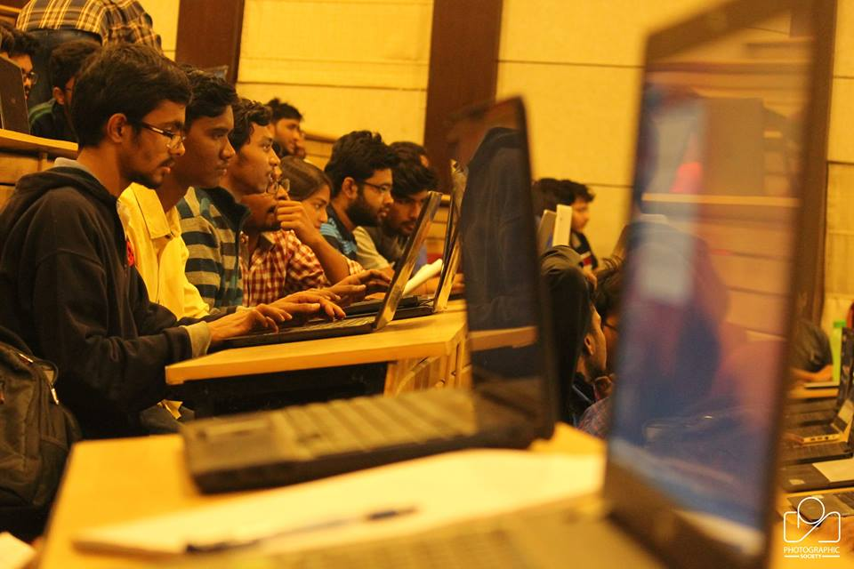

Today is the generation of automation, with big leaps in research being taken towards making human life more and more comfortable by reducing redundant manual work. Artificial Intelligence is a domain which is the current star in the modern scientific research. Nivritti, consisting of the best across all fields, is always eager to learn, grow and remain at par with the modern technology, ready to take up all that the world has to offer us. We are the first to have a dedicated set of members working on the field of Artificial Intelligence. Being a trend setter, we orchestrated the very first Machine Learning Workshop of BIT Mesra, and where thrilled by the overwhelming response we started off with the basics of Python and quickly accelerated towards basic Machine Learning Algorithms. Our workshop was a two way interaction rather than a one way sermon where we encouraged audience participation and tried to implement lots of coding activities. The excitement of the audience filled us with a new zeal to try more new and interesting things, and hence a lot of surprises are in store for our next workshop.